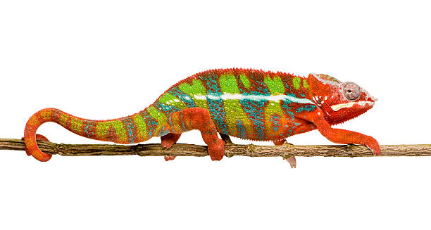

O camaleão é uma das criaturas mais fascinantes do reino animal. Com sua capacidade de mudar de cor, ele se destaca tanto por sua aparência única quanto por suas incríveis habilidades de adaptação. Esta imagem captura de perto um camaleão repousando em um galho, destacando as complexas texturas e cores vibrantes de sua pele
.
Os camaleões são conhecidos por suas características incomuns. Suas habilidades vão muito além da camuflagem; seus olhos podem se mover independentemente um do outro, oferecendo uma visão de 360 graus, o que lhes permite observar o ambiente de forma extremamente eficiente. Além disso, sua língua pode ser projetada a uma velocidade incrível para capturar insetos em frações de segundo.

O camaleão usa sua habilidade de mudar de cor tanto para se esconder de predadores quanto para se comunicar com outros camaleões. Ao adaptar suas cores às condições de luz, temperatura e humor, ele se torna uma verdadeira obra-prima da evolução. Essa adaptação não só o protege, mas também facilita sua interação com o ambiente ao seu redor.
Existem mais de 160 espécies de camaleões, que habitam principalmente as florestas e savanas da África, incluindo Madagascar, onde muitas espécies são endêmicas. Infelizmente, a destruição de seus habitats naturais está colocando algumas espécies em risco de extinção. Projetos de conservação ao redor do mundo trabalham para proteger essas criaturas e seus ecossistemas frágeis.
Fim...
Autor ChatGpt